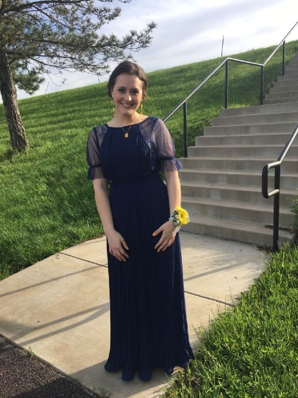

Family and Home Life in St. Louis
Abigail Bozue was born on January 15, 2001. She was the third of four children. She was born and grew up in St. Louis, Missouri with her parents and three siblings. She had a great relationship with her siblings. They would always be joking around with each other and make fun of each other. Of course, in a friendly and sibling way of love. She has always said that her brothers make her laugh all the time when they are together. They just are always cracking jokes and having fun. They would spend time playing games with a competitive spirit within all of them.

Interests, Hobbies, and Activities
Abigail is one of the most talented people I know. First off, she has the most amazing voice I have ever heard. She has a perfect tone and pitch whenever she sings. Because of her beautiful voice, she had a band with some close friends in high school. She was the lead singer. With her band, they had multiple opportunities to share their talents with people all around Missouri. Abigail also knows how to play many instruments. She knows how to play the violin, ukulele, and piano. She has played the violin for over 14 years. In those 14 years, she has traveled all across America and Canada, sharing her talents with her orchestra in competitions. Because of her talent in playing the violin, she taught herself how to play the ukulele. She took many piano lessons when she was growing up. She also loves to write her own songs. She loves to express herself in her songs and shares who she is in them. She finds it as a way to relax and share what she is feeling and going on in her life. During high school, Abigail participated as a manager for her high school's Water Polo team. She loved it because it was a way to bond with her brothers since they were on the team. Abigail has grown a huge love of mental health and psychology. Because of her love of mental health, she decided that she wants to study Psychology. Currently, she is working hard on her bachelor's degree and plans to eventually get her Ph.D. in Psychology. She wants to become a professor at a college and start her very own clinic. Abigail is fluent in Spanish as well. She studied Spanish in high school and continue to study it in college as well. She was called Spanish-speaking for her mission. She loves the Hispanic culture and the language.
Attributes of Her
One of the first things I learned about Abigail is how much she loves everyone around her. Abigail always shows love to everyone and anyone that she meets. She doesn't judge and always helps those that need it even though she may need help herself. Abigail is the ultimate example of charity to me. She is also very forgiving. She doesn't hold grudges and is always quick to forgive others. She is very understanding. Abigail is also a lover of learning. She is very knowledgeable in anything that she has tried to learn more about. I love listening to anything that she shares with me because she puts so much passion and love into the things that she has studied in her personal time. She is so funny as well. She has the best jokes and always knows how to make others laugh. She has the best sense of humor and knows how to have fun with anyone that she meets. She has the best laugh.
